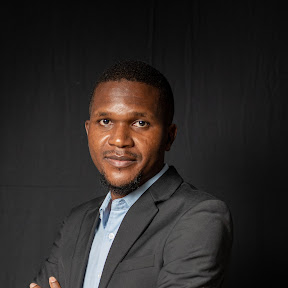

Simon Chivina Nyirenda

Professional Summary
I am a multi-skilled communication professional with experience in policy, research and civil society sectors. In my over 4-year career, I have used my writing, designing, and digital media management skills to support development programming efforts in Malawi and Africa.
Education
- Bachelor of Arts in Communication and Cultural Studies with Credit, majoring in Public Relations-Chancellor College, University of Malawi (2012-2016).
Areas of Expertise
- Wed development
- Blog writing
- Social media management
- Graphics designing
- Email marketing
- Video editing
Experience
-
Communications Lead at FemAnalytica (1 November 2023- present).
Responsibilities and Key Achievements
- Developing communication strategies for projects supporting organisations to use advanced data analytics to facilitate the achievement of SDGs.
- Developing content and managing the website and social media accounts.
- Designing and producing publications and promotional materials such as posters and banners to promote events such as workshops (see portfolio).
-
Graphic Design and Communications Assistant at the African Institute for Development Policy (AFIDEP) (15 August 2022- 15 June 2023).
Responsibilities and Key Achievements
- Developed communication and stakeholder engagement strategies for AFIDEP's health and demography research and policy advocacy projects.
- Authored blogs, media releases and statements, commentary and feature stories for media (see portfolio ).
- Managed AFIDEP's website and social media accounts (Facebook, Twitter, LinkedIn, and YouTube) by developing, editing and updating content.
- Edited, designed, and produced over 15 publications and IEC materials (policy briefs, brochures, videos, and social media cards (see portfolio)).
- Provided communication support to researchers at conferences by developing promotional materials and formatting presentations e.g. ICFP 2022
- Reported on content performance, including media appearances, to identify successful strategies, top-performing content, and other useful insights.
-
Field Officer (Communication and Documentation) at World Connect Malawi (1 April 2020- 10 August 2022)
Responsibilities and Key Achievements
- Wrote 23 success stories on different World Connect projects in education, health, and economic empowerment on the USAID-funded “Investing in Locally-Led Development in Malawi” project.
- Created and managed the World Connect Malawi Facebook page and grew the page to over 2,500 followers in under six months.
- Coordinated visits of journalists to World Connect projects to document success stories e.g. a feature published in The Nation .
- Prepared progress reports on the project activities and workshop reports on community engagement efforts to share with the project team and funders.
-
Teaching Assistant at Mzuzu University, Department of Communication Studies (November 2018- March 2020).
Responsibilities and Key Achievements
- Taught Communication Skills (CS) I & II and Professional Writing.
- Managed a team of Adjunct Lecturers for CS to ensure synchronised delivery
of course content
- Authored a business communication module for TEVET in Malawi.
Contact Me